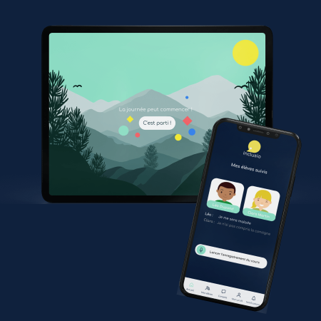
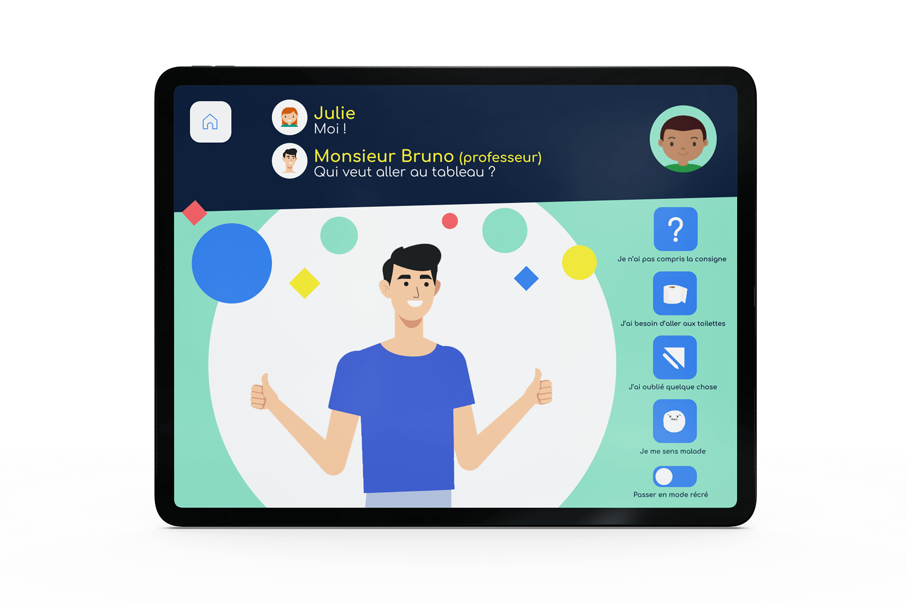
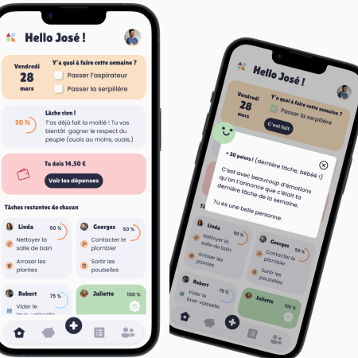
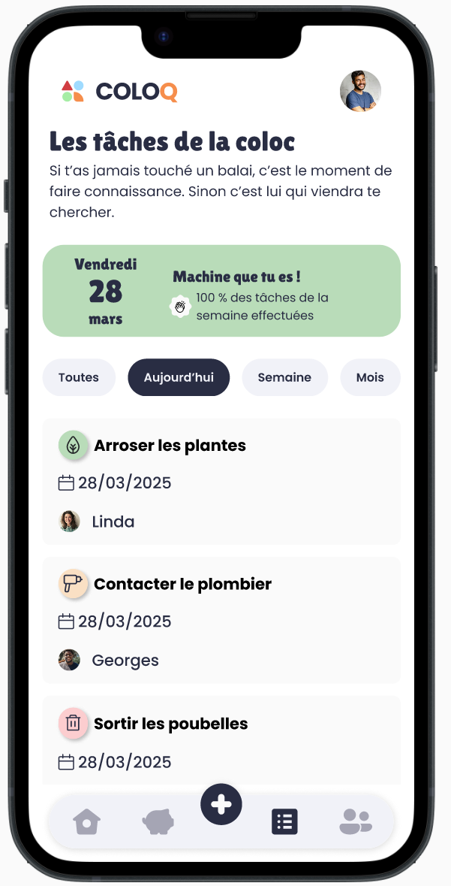

Stratégie, communication et design d’expérience : j’allie mes compétences en marketing à la conception d’interfaces digitales pour des produits engageants et efficaces.
Un objectif : mettre mes compétences en faveur de missions stimulantes ! En bref, j'ai soif de problématiques à résoudre, de penser un produit en adéquation avec l'entreprise et conçu POUR l'utilisateur !
On collabore ensemble ? "
CV01
Compétences, Expériences & Formation
Mathilde Allain
Product | UX UI Design | Communication | Marketing
Forte d’une solide expérience en communication et marketing, j’ai élargi mon champ d’expertise à la conception digitale (UX UI) afin de concevoir des expériences engageantes et impactantes au sein de projets ambitieux.Télécharger le CV
Afin de développer mes compétences en UX UI et de satisfaire davantage mon appétence pour la conception de produits, j'ai suivi une formation en product / UX UI.
2023
Licence Métiers de l’Exposition et Technologies de l'Information
2010 - 2011
BTS Communication des Entreprises
2008 - 2010
Mise à Niveau en Arts Appliqués
Ecole publique d’Arts Appliqués Auguste Renoir
2007 - 2008
Baccalauréat littéraire spé. cinéma-audiovisuel
2007
Product Designer | UX UI
Netcarbon est une plateforme SaaS de cartographie environnementale dédiée aux territoires et porteurs de projets. Elle permet d’évaluer et d’optimiser l’impact environnemental des projets d’aménagement en s’appuyant sur des indicateurs scientifiques fiables tels que le stock de carbone, les îlots de chaleur, le stress thermique, la biodiversité, l’occupation et l’artificialisation des sols.
Conception de wireframes, maquettes, prototypes Amélioration continue et création de nouvelles fonctionnalités
Rédaction des users stories | Gestion backlog |
Collaboration avec l'équipe de développeurs pour suivre les développements et tester l'intégration des maquettes
Compréhension des besoins utilisateurs et animation d'ateliers clients
Conception d’expériences utilisateur permettant à des décideurs publics et privés de comprendre, comparer et agir sur des données climatiques et environnementales complexes
Pilotage de la conception UX/UI d’une plateforme SaaS de cartographie environnementale (discovery, parcours, wireframes, prototypes, delivery)
Traduction d’indicateurs scientifiques en interfaces exploitables (îlots de chaleur, stress thermique, biodiversité, stock carbone)
Travail en étroite collaboration avec les équipes data, ingénierie et experts métier pour prioriser, tester et déployer des solutions à fort impact climatique
Conception de fonctionnalités cœur métier (gestion de projets, simulations d’aménagement, parcours de labellisation carbone)
Actuellement
Chargée de communication & Social media manager
Intoo Habitat, groupe multimarque réunissant les métiers de l’immobilier et de l'habitat (Intoo
habitat, Century 21, Vousfinancer, Homkia, Nousassurons)
Stratégie social media et community management |
Orchestration des réseaux sociaux des différentes marques du groupe (une quarantaine d’agences) |
Management d’un community manager | Rédaction et création de contenus | Personal branding du PDG |
Mises à jour des sites web | Print (création visuels) | Suivi et gestion des avis clients du groupe
2021 à 2023
Chargée de marketing digital
CAFPI, Expert en crédit immobilier
Content marketing : rédaction de contenus et mises à jour site web par l’optimisation des contenus
existants, analyse des performances | Animation du comité éditorial | Refonte du site web | Veille
sectorielle et concurrentielle, Réseaux sociaux : plannification (Hootsuite) et création de contenus
(Facebook, Linkedin, Instagram, Youtube) | Campagnes (Facebook et Linkedin) | Community management
| Gestion et coordination de projets web et digitaux | Actualisation du site web
2019 à 2021
Responsable communication, marketing & événements
Casino Salies-de-Béarn - Hôtel du Parc***, Groupe Partouche
Définition et mise en oeuvre du plan communication et marketing | Communication print : rédaction
et création des supports papiers | Communication digitale : création de contenus réseaux sociaux
(vidéos, jeux concours...) | Campagnes Facebook Ad | Gestion : respect des engagements budgétaires
et des plannings | Coordination générale des événements culturels et artistiques & animations |
Médias : Campagnes radio (NRJ), communiqués de presse
2018 à 2019
Expatriation en Nouvelle-Zélande
Divers emplois dans les secteurs de la restauration/hôtellerie, agricole et viticole
2016 à 2018
Chargée de communication
SSI Service, groupe DEF, maintenance multimarque des systèmes de sécurité incendie
Développement de la communication corporate et digitale du Groupe DEF en collaboration avec les
différentes sociétés du Groupe | Refonte site web et développement d’un portail web client |
Création de contenus digitaux | Newsletter & emailing : conception et rédaction | Print : rédaction
de l’ensemble des supports | Création affiches, invitations, plaquettes, outils d’aide à la vente |
Organisation et participation aux événements et salons
2014 à 2016
Chargée de projets et de relations publiques
Hip Hop Citoyens / Paris Hip Hop Festival (500 événements, 100 000 spectateurs)
Création et rédaction de contenus : articles, newsletters, bilan d’événements en faveur des
partenaires | Gestion partenariats | Rédaction des dossiers institutionnels | Coordination des
projets et des actions en relation avec les différents partenaires et collectivités | Coordination
générale et logistique
2013 à 2014
Chargée de communication
cie professionnelle de théâtre et association culturelle La Carotte
cie professionnelle de théâtre et association culturelle La Carotte
cie professionnelle de théâtre et association culturelle La Carotte
2008 à 2013
J'ai apporté mes compétences en communication et marketing dans des domaines variés :
Fizzy Fruits est une boisson pétillante fruitée, imaginée avec une identité visuelle dynamique et joyeuse, incarnant une explosion de saveurs naturelles à chaque gorgée.
L’objectif du projet est de développer une identité de marque forte, colorée et expressive, ainsi qu’une interface utilisateur conviviale qui reflète l’univers sensoriel de la marque et engage visuellement les utilisateurs. Ce projet combine à la fois Branding (logo, packaging) et UI Design (interface produit / concept d’application), dans une esthétique vibrante, naturelle et moderne.
Problématique
Comment traduire visuellement l’énergie pétillante, la fraîcheur des fruits naturels et l’aspect convivial de Fizzy Fruits à travers une identité visuelle complète, tout en garantissant une expérience digitale cohérente, expressive et mémorable ?
Recherche
- Analyse des codes visuels du marché des boissons fruitées, notamment les tendances en packaging pétillant et identité de marque rafraîchissante
- Benchmarking de marques qui combinent personnalité visuelle forte et expérience digitale immersive
Insights
-Les consommateurs associent souvent les boissons pétillantes à des émotions de joie, d’énergie et de légèreté
- Une identité forte repose sur un équilibre entre créativité audacieuse (couleurs, formes, typographie) et lisibilité/praticité dans l’usage réel (packaging, app, site)
- L’interface doit traduire ce même univers sensoriel, tout en restant simple à comprendre et à utiliser
Résultats & impact
Une identité visuelle forte, distinctive et cohérente à travers branding, packaging et interface
Une esthétique qui exprime la personnalité pétillante et naturelle de Fizzy Fruits
Un design UI qui engage visuellement sans compromettre la clarté, la hiérarchie ou l’expérience utilisateur
Impact visuel & émotionnel :
L’univers visuel donne immédiatement une sensation de fraîcheur, de vitalité et de plaisir.
Wav Festival | Interface UX UI | Social Media | Print
WAV Festival est un projet de branding complet pour un festival de musique, pensé pour capter l’énergie, la diversité et l’ambiance immersive d’un événement musical incontournable.
Il couvre une identité visuelle forte, un site web, des contenus social media, des supports print et des animations motion design, afin de créer un écosystème visuel cohérent à 360 °
Problématique
Comment créer une identité visuelle immersive, reconnaissable et cohérente pour un festival de musique fictif, tout en offrant une expérience digitale et physique impactante à travers différents supports (site web, réseaux sociaux, affiches, motion) ?
Recherche
- Benchmark des festivals de musique, événements culturels et expériences immersives pour comprendre les codes visuels qui fonctionnent (couleurs, typographies, animations).
- Analyse des pratiques sociales et digitales des festivals afin de définir des formats de communication pertinents (réseaux sociaux, teasers motion, visuels print).
Insights
- Les festivals musicaux doivent proposer une expérience visuelle forte avant même l’événement — via des teasers, social posts et motion design.
- Une identité cohérente entre print, digital et motion renforce la reconnaissance de marque auprès du public.
- Une direction artistique inspirée par la musique, le mouvement, les vibrations et le rythme favorise l’engagement des audiences.
Résultats & impact
Capacité à construire une identité visuelle immersive et cohérente, déclinée sur divers supports, dans une inspiration 90's fédératrice
Supports social et motion qui activent efficacement l’attention des audiences digital natives.
Bandblend | Interface UX UI | Application mobile
Bandblend est une application mobile pensée pour les artistes musicaux. Elle facilite la connexion entre talents, stimule la créativité musicale et encourage les synergies artistiques en offrant un espace dédié au partage d’idées, de démos et d’inspirations. L’application vise à devenir un catalyseur de collaborations musicales, en réunissant des artistes aux intérêts communs et en nourrissant la scène créative.
Problématique
Comment concevoir une application qui favorise les interactions musicales collaboratives entre artistes, tout en offrant une expérience fluide, intuitive et engageante ? L’enjeu consiste à dépasser les simples fonctions de réseau pour proposer un espace centré sur la créativité, le partage de démos et la formation de groupes musicaux.
Recherche
L’analyse s’est concentrée sur les frictions rencontrées par les artistes au moment de collaborer musicalement :
Difficulté à trouver des partenaires compatibles selon les styles et les objectifs
Manque d’un espace dédié au partage structuré de démos et idées musicales
Absence d’outils facilitant la créativité collective en temps réel
Insights
Les artistes ont besoin d’un outil qui combine réseau social spécialisé + espace de production/création collaborative
La simplicité d’accès aux contenus (démos, profils, playlists collaboratives) est essentielle pour maintenir l’engagement
Objectifs UX
Concevoir une application avec une navigabilité fluide, permettant aux utilisateurs d’explorer, partager et s’associer sans friction
Structurer un parcours utilisateur qui valorise le profil artistique et les contenus musicaux partagés
Résultats & impact
Mise en place d’une expérience mobile fluide, où le partage de contenus et la connexion entre talents sont mis en avant
Une interface qui valorise la créativité musicale, tout en offrant des parcours simples pour découvrir, interagir et collaborer
Inclusio | Interface tablette & mobile

Inclusio est l'application qui facilite l'insertion des élèves sourds muets en milieu scolaire, son objectif est de retranscrire le langage des signes à l'oral et inversement par le biais d'une application reposant sur l'intelligence artificielle.
L'application est au format tablette pour l'enfant reliée à l'application mobile pour l'enseignant.
Réalisé au cours d'un défi Hackathon, l'audacieux challenge était de mener à bien le projet en 48 heures.
Problématique
320 000 enfants sourds ou présentant de lourdes difficultés auditives sont scolarisés en milieu scolaire dit "ordinaire"
Comment inclure les élèves sourds, muets ou sourds-muets en milieu scolaire en favorisant les échanges en classe avec le groupe et l'enseignant afin de limiter le sentiment d'isolement et les risques d'échecs scolaires ?
Recherche
Difficulté d’accéder rapidement aux services en cas de besoin d’assistance ou d’accompagnement

Insights
Les utilisateurs ont besoin d’un outil qui simplifie la demande d’assistance, avec des éléments visuels et des parcours clairs, même sans expérience technique préalable
Une interface mobile pensée pour réduire les frictions cognitives permet de favoriser l’autonomie et l’inclusion
Objectifs UX
Concevoir une navigation fluide et claire, adaptée à des utilisateurs avec des besoins spécifiques
Intégrer des composants visuels rassurants et faciles à comprendre (icônes, typographie lisible, contrastes visuels)
Résultats & impact
Capacité à concevoir une solution mobile centrée sur des besoins réels d’accessibilité.
Maîtrise des principes UX/UI pour créer des parcours simples même dans des contextes cognitivement exigeants
Le menu de l'application offre une variété de sections pour une expérience personnalisée.
Fonction Rejoindre sa classe et pour accéder au traducteur, consulter les leçons enregistrées, le menu "Mes camarades" offre la possibilité de consulter et d'associer chaque avatar à la photo correspondante de chaque élève, permettant ainsi une identification facile au sein de la communauté scolaire.
Jeux interactifs pour favoriser la communication et renforcer les liens entre les élèves.
La section 'Noter ma journée' permet d'évaluer l'intégration de l'élève
L'application de l'enseignant assure également la réception d'alertes des élèves, offre des conseils d'experts, et facilite le suivi de leur autoévaluation quotidienne.
ColoQ | Interface UX UI | Application mobile

Coloq (prononcé Colle-au-Cul) est une application mobile conçue pour simplifier la vie en colocation en aidant les colocataires à gérer les tâches, les dépenses et la communication sans tensions ni conflits. L’objectif est d’éliminer les disputes quotidiennes autour de qui fait quoi et qui paie quoi, en rendant l’organisation plus claire, équitable et collaborative.
Problématique
En colocation, les galères sont souvent les mêmes :
Certains font plus de ménage que d'autres
Certains paient plus… ou consomment plus
Personne n’est vraiment d’accord, mais tout le monde est un peu frustré
Recherche
Interviews avec colocataires, étudiants et jeunes actifs
Questionnaire sur les habitudes de gestion collective
Observations terrain des rites de vie en colocation (répartition des tâches, dépenses, communication)
Absence d’outils facilitant la créativité collective en temps réel

Insights
Les colocataires désirent des outils simples, justes et peu contraignants pour s’organiser sans se prendre la tête
La plupart des tensions quotidiennes proviennent d’un manque de transparence dans la répartition des responsabilités et des dépenses
Objectifs UX
Créer une application mobile-first, pensée pour des profils jeunes (étudiants & jeunes actifs), avec une interface simple et claire
Mettre en place des fonctionnalités qui réduisent la friction sociale autour de la gestion commune
Créer une interface collaborative et mobile-first
Résultats & impact
Perception accrue de justice et transparence dans la colocation
Les utilisateurs trouvent l’outil simple à prendre en main
Un peu plus ?03
En savoir plus
Refonte du site CAFPI, leader du courtage en crédit
Afin de booster davantage le référencement du site et diminuer le taux de rebond, une refonte du site internet de Cafpi a été opérée.
En tant que Content manager, j'ai travaillé aux contenus du site dans une démarche SEO. J'ai également participé au projet global de redesign avec l'ensemble de l'équipe.
Par ailleurs, la totalité des guides et articles du site ont été réécrits afin de répondre davantage aux exigences de référencement.
Toutes les semaines, deux articles supplémentaires étaient intégrés au site dans la partie blog.
2/2 hackathons remportés pendant ma formation concepteur UI
Au cours de la formation Concepteur UI de la Wild Code School (2023), j'ai eu l'occasion de participer à deux hackathons. Ces épreuves intensives nous ont permis de mettre en pratique nos compétences en répondant à une problématique sur un temps court.
Hackathon 1 : Bandblend
Hackathon gagné, point fort relevé par le jury : l'UX !
Pour ce premier hackathon (1 jour et demi), le défi était de produire un prototype haute-fidélité d’un produit (site web, application, logiciel…), qui aiderait les acteurs du marché de la musique.
Nous avons choisi de proposer une application de rencontre entre musiciens en formulant la problématique suivante : comment faciliter la rencontre entre artistes et compositeurs
afin de créer des synergies et favoriser la création artistique?
Ainsi, notre application Bandblend facilite la connexion entre artistes, stimulant la créativité et les synergies musicales. Elle unit des talents, offrant un espace pour partager idées et inspirations.
Formant un catalyseur de créations, elle encourage le partage de démos et les échanges. L'application favorise également la formation de groupes musicaux cohésifs, unissant des artistes aux intérêts communs.
Cet outil dynamique nourrit la créativité des talents, contribuant ainsi à enrichir la scène artistique.
Hackathon 2 : Inclusio
Hackathon gagné, points forts relevés par le jury :
Formulation de la problématique et contextualisation
Interface élèves & enseignant très complète
Le soin apporté aux animation et aux illustrations, très ludique
Le second hackathon (2 jours et demi) portait sur le thème "Révolutionner l'éducation de demain", nous devions développer une solution dans laquelle l’IA favorise l’inclusivité dans l’apprentissage et la formation.
Nous sommes partis du chiffre suivant : 320 000 enfants sourds ou présentant de lourdes difficultés auditives sont scolarisés en milieu scolaire dit “ordinaire” (sur un total de 380 000 enfants handicapés auditifs recensés en France)
Afin de choisir une direction, nous avons formulé la problématique suivante : Comment inclure les élèves sourds-muets, en milieu scolaire en favorisant les échanges en classe avec le groupe et l’enseignant afin de limiter le sentiment d’isolement
et les risques d’échecs scolaires ?
Nous avons proposé une application sur tablette pour les enfants sourds muets à l'école reliée à l'application mobile de l'enseignant. Cette application retranscrit le langage des signes à l’oral et inversement par le biais d’une application reposant sur l’intelligence artificielle.
Contact04
Contactez-moi
Je suis à votre disposition pour tout complément d'information.


{kind=link}
{kind=link}
{kind=link}